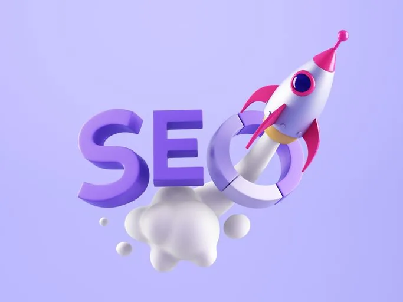

Pendant longtemps, on a vu le site web comme une carte de visite en ligne, un peu figée, qu’on crée une fois “quand on aura le temps”. Résultat : beaucoup d’entrepreneurs misent tout sur Instagram, TikTok ou le bouche-à-oreille… et se retrouvent bloqués dès que l’algorithme change ou qu’ils ont moins de temps pour publier.
1. Ton site devient ta base stable (quand les réseaux changent tout le temps)
Les réseaux sociaux sont puissants… mais instables. Algorithmes changeants, portée qui chute, comptes suspendus, fatigue de devoir poster sans arrêt : tout ça, tu ne le contrôles pas.
Ton site, lui, est ton espace à toi. Tu décides du design, de la structure, de ce que les gens voient et dans quel ordre. Il fonctionne même quand tu ne publies pas.
Concrètement, un site t’apporte :
- un endroit unique vers lequel renvoyer depuis tous tes réseaux ;
- une présence professionnelle même quand tu fais une pause sur Instagram ;
- une image plus “installée” aux yeux de tes clients potentiels ;
- un support que tu peux faire évoluer au rythme de ton activité.
2. Tu gagnes en crédibilité et en confiance
Aujourd’hui, le premier réflexe avant de travailler avec quelqu’un, c’est de chercher son nom sur Google. S’il n’y a que quelques posts Insta et un profil un peu vide, ça crée du doute.
Un site web bien construit renvoie une impression claire : “Cette personne est sérieuse, professionnelle et installée.”
Sur ton site, tu peux :
- présenter ton histoire et ta vision de manière plus profonde ;
- détailler tes services, tes tarifs et ta façon de travailler ;
- ajouter des témoignages clients, logos, cas concrets ;
- rassurer avec une FAQ, des explications et un ton humain.

3. Tu deviens trouvable sur Google (sans dépendre uniquement d’Instagram)
Les réseaux sociaux sont parfaits pour créer du lien, mais ce ne sont pas toujours eux qui t’apportent les meilleurs clients. Beaucoup de gens tapent directement sur Google : “esthétitienne ongulaire”, “sophrologue à Lyon”, “création de site web pour thérapeutes”…
Avec un site bien structuré et un minimum de référencement naturel (SEO), tu peux :
- apparaître dans les résultats Google sur des mots-clés pertinents ;
- attirer des personnes déjà en recherche active ;
- te positionner comme une référence dans ton domaine ;
- continuer à recevoir des demandes même quand tu n’es pas en story.
C’est typiquement le genre d’investissement qui ne donne pas forcément un “boom” en un jour, mais qui peut te rapporter sur le long terme.
4. Tu simplifies et automatises ton quotidien
Un site web bien pensé ne sert pas qu’à “être joli”. Il peut vraiment t’alléger au quotidien avec des fonctionnalités simples :
- formulaire de contact clair (plus de DM perdus !) ;
- prise de rendez-vous en ligne connectée à ton agenda ;
- FAQ pour répondre aux questions qui reviennent tout le temps ;
- page “services” qui filtre les demandes non pertinentes ;
- possibilité d’ajouter plus tard du paiement en ligne ou des ressources digitales.
Résultat : moins de temps passé à répéter les mêmes choses, à répondre à des messages partout, et plus de temps pour tes clients et ton cœur de métier.
5. Tu prépares ton activité pour la suite
Peut-être qu’aujourd’hui tu proposes surtout des séances individuelles, des prestations de service “classiques” ou des accompagnements sur mesure. Mais demain ?
Avoir un site web professionnel te donne une base pour faire évoluer ton activité :
- lancer une offre en ligne (atelier, mini-formation, e-book) ;
- créer un blog pour partager ton expertise et booster ton SEO ;
- tester de nouvelles offres sans repartir de zéro à chaque fois ;
- collaborer plus facilement avec d’autres pros (partenariats, interviews…).
En résumé : 2025 est le bon moment pour passer à l’action
Si tu sens que tu as “grandi” par rapport à ton compte Instagram ou à ta simple fiche Google, c’est probablement le signe que ton activité mérite un site à sa hauteur.
Un site professionnel, c’est :
- un point central pour ton image de marque ;
- un outil pour convertir tes visiteurs en clients ;
- un support pour poser ton positionnement et tes offres ;
- un investissement qui peut se rentabiliser plusieurs fois sur la durée.
Envie d’un site web professionnel qui travaille vraiment pour toi ?
Chez Sky Social Agency, j’accompagne les indépendants, thérapeutes, coachs et petites entreprises à créer des sites web modernes, clairs et alignés avec leurs objectifs business (pas juste avec les templates).